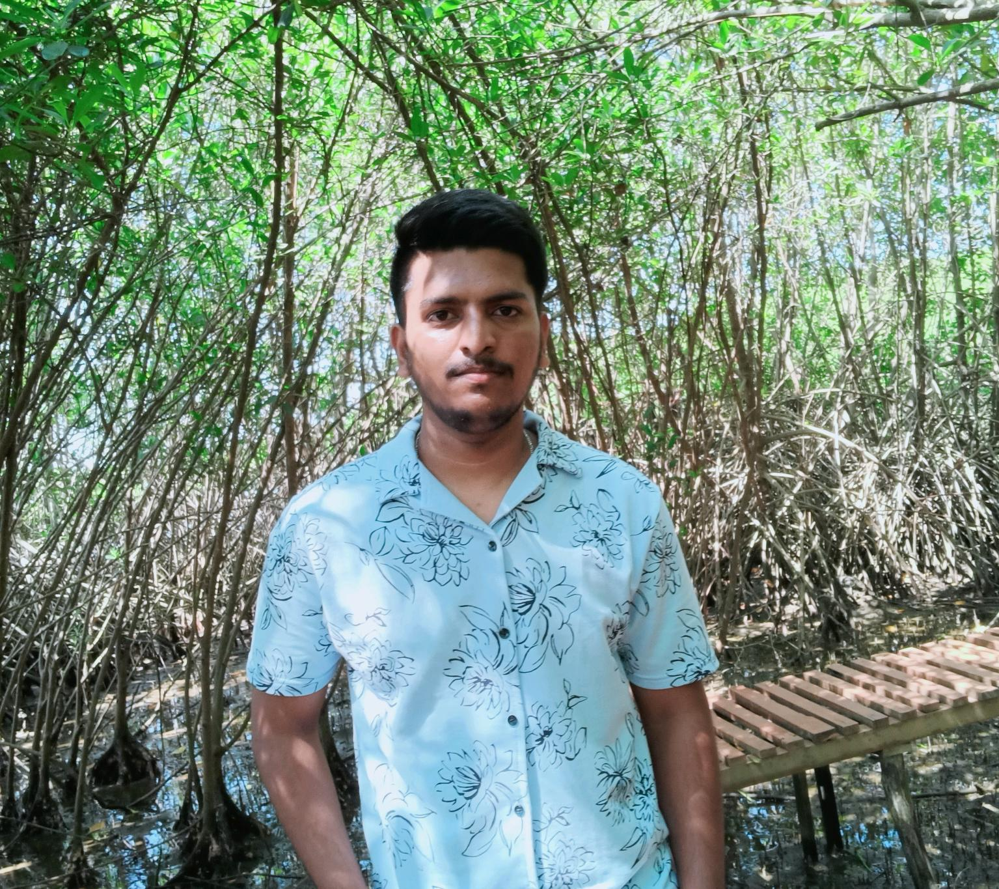

SWASTHIK R GOWDA

Summary
Seeking to pursue an evolving and learning-oriented career in the Information Technology Industry. Be a part of progressive organization that gives a scope to enhance my knowledge and utilize my skills towards the domain specific growth of the organization and also as an individual.
EDUCATION
- Bachelor of Engineering (BE) Visvesvaraya Technological University (2018 - 2022).
WORK EXPERIENCE
- I had worked in regression testing role for one year.
- I worked as Project engineer in Wipro Technology in Work from Home. Working from 30 / May/2022 - Present.
- In my project I had contributed myself in rotational shifts 24/7 including night shifts and extended my support when needed.
- As a result, I had got 2 awards for my valuable contribution and appreciated but the customer for finding high priority issues.
TECHNICAL SKILLS
- C programming language
- Python programming language
- HTML
- Robotic Process Automation
- Selenium
TOOLS USED
- Service Now
- Jira
- Confluence
- BM
- Site 24*7
- Selenium IDE
- Microsoft Outlook
DECLARATION
I hereby declare that the above mentioned particulars are true to the best of my knowledge.
{kind=link}
{kind=link}
{kind=link}